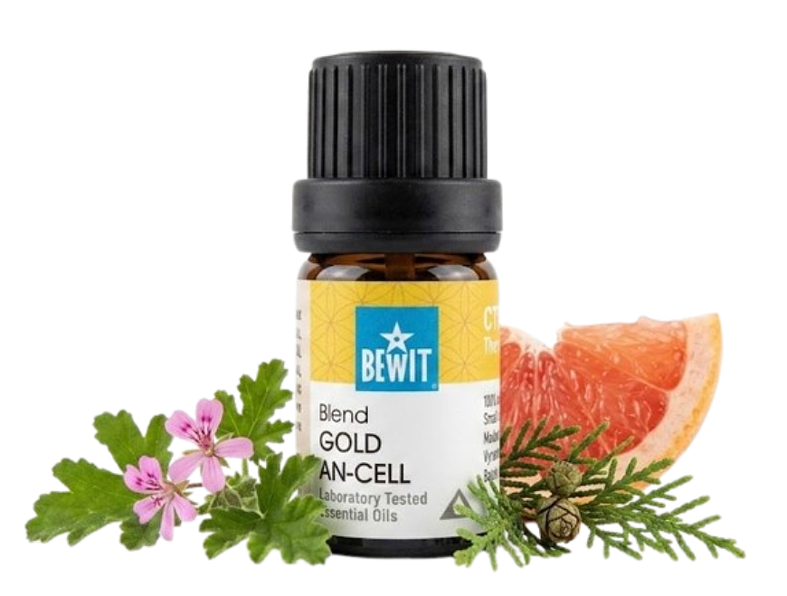

Celulitida
přírodní podpora pro zpevnění pokožky
Pomerančová kůže trápí většinu žen — bez ohledu na věk nebo váhu. Přírodní esence mohou podpořit prokrvení, zpevnit pokožku a zlepšit její celkový vzhled.

přírodní podpora pro zpevnění pokožky
Pomerančová kůže trápí většinu žen — bez ohledu na věk nebo váhu. Přírodní esence mohou podpořit prokrvení, zpevnit pokožku a zlepšit její celkový vzhled.

Speciální směs pro zpevnění a regeneraci pokožky. Vhodná jako prevence i terapie již existující celulitidy. Pravidelná masáž přináší viditelné výsledky.
💧 Jak použít: Naneste trochu nosného oleje (např. jojobový nebo kokosový) na problematická místa, přidejte kapku a důkladně vmasírujte krouživými pohyby. Ideálně po sprše, 1–2× denně. Po nanesení se vyhněte slunci po dobu 12–24 hodin.
Zjistit více →💧 Jak použít: Naneste trochu nosného oleje (např. jojobový nebo kokosový) na problematická místa, přidejte 1–2 kapky a důkladně vmasírujte krouživými pohyby. Po nanesení se vyhněte slunci po dobu 12–24 hodin.
Chci prokrvení💧 Jak použít: Naneste trochu nosného oleje (např. jojobový nebo kokosový) na problematická místa, přidejte kapku a masírujte krouživými pohyby zdola nahoru. Po nanesení se vyhněte slunci po dobu 12–24 hodin.
Chci zpevnění💧 Jak použít: přidejte 1 hrnek epsomské soli (přibližně 200 g) do teplé koupele a přidejte 3–5 kapek Gold An-Cell nebo grepu.
Chci detox koupelCelulitida není nemoc ani chyba. Je to přirozená součást ženského těla. Pravidelná masáž s přírodními oleji pomůže pokožce vypadat lépe a zároveň vám dopřeje chvíli péče o sebe. Výsledky přicházejí s pravidelností.
🌿 Všechny produkty, které na tomto webu doporučuji, jsou od BEWIT. Jako registrovaný zákazník můžete nakupovat se slevou až 50 % na vybrané produkty.
Registrace u BEWIT zdarma →